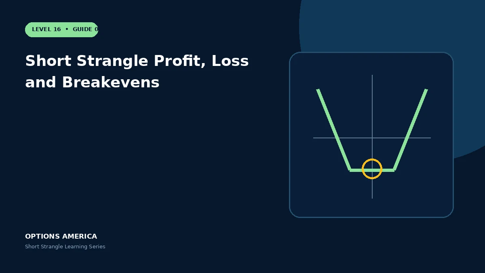

Calculate credit, maximum profit, two breakevens and losses outside a short strangle's expiration range.
Inside both strikes
If the underlying expires between the put and call strikes, both options are worthless and the seller retains the full opening credit, less costs.
Lower breakeven
Subtract the combined credit from the short-put strike. Below that price, put intrinsic value exceeds total premium and loss grows toward the underlying's zero-price boundary.
Upper breakeven
Add combined credit to the short-call strike. Above that price, call intrinsic value exceeds total premium and loss grows without a theoretical limit.
Interim P&L
Before expiration, implied volatility and remaining time value can create losses even inside the eventual profitable range. Margin and liquidity can also change before the payoff converges.
A practical example
A 90/110 short strangle collects $4. Maximum profit is $400, the lower breakeven is $86 and the upper breakeven is $114; expiration at $120 loses $600.
This simplified scenario focuses on selected outcomes; live prices and risks will differ. Live option prices also reflect the underlying price, time decay, rates, dividends, liquidity and transaction costs. Greeks are theoretical estimates, not guarantees.
Build a risk-first trading plan
Before using short strangle profit, loss and breakevens, record the stock price, put and call strikes, expiration, total credit and contract multiplier. Calculate both breakevens, then estimate dollar loss beyond them under upside and downside gaps. A wide strike range improves the starting room but does not define either tail.
Stress several prices, time points and volatility levels, including a skew change that affects the put and call differently. Review delta, gamma, theta, vega and buying power for the complete portfolio. Multiple OTM positions can become tested together during a common market shock.
Define a profit target, maximum tolerated loss, tested-side trigger, margin reserve and latest exit date before entry. Decide whether an event is intentionally included and how assignment would be handled. Use multi-leg orders and confirm quantities after every fill, roll or partial close.
Document the result after exit, including slippage, assignment effects and the largest intraday exposure. Comparing the original forecast with the actual path helps distinguish a sound process from a lucky outcome and improves later strike, duration, margin-reserve and position-size choices under similar market conditions.
Frequently asked questions
Where is maximum profit earned?
Anywhere between the two strikes at expiration.
How many breakevens?
Two.
Does the range define risk?
No.
Continue the Short Strangle cluster
Explore related guides: Short Strangle Example With Payoff Scenarios · Best Market Conditions for a Short Strangle · Short Strangle Margin and Buying Power. For a structured sequence, use the free Level 16 – Short Strangle course.
Options involve risk and are not suitable for every investor. This material is educational and is not investment, tax or legal advice. Greeks are theoretical estimates, and contract terms and broker requirements can vary.